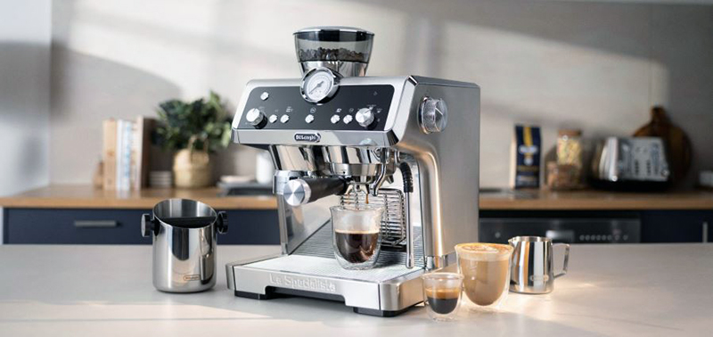

Teknologi pembuatan kopi saat ini berkembang ke arah presisi, otomatisasi, dan konsistensi rasa. Mesin espresso modern dilengkapi kontrol suhu berbasis PID (Proportional-Integral-Derivative) yang menjaga stabilitas panas secara akurat, sementara penggiling kopi (grinder) menggunakan burr presisi tinggi untuk menghasilkan ukuran partikel yang seragam. Selain itu, perangkat seperti pour-over otomatis dan mesin kopi pintar yang terhubung dengan aplikasi memungkinkan pengguna mengatur variabel seperti rasio air, waktu ekstraksi, dan tekanan dengan detail tinggi. Inovasi lain mencakup penggunaan sensor untuk memantau kualitas ekstraksi secara real-time serta teknologi kapsul yang dirancang untuk kemudahan tanpa mengorbankan konsistensi rasa.

Website tentang dunia kopi.